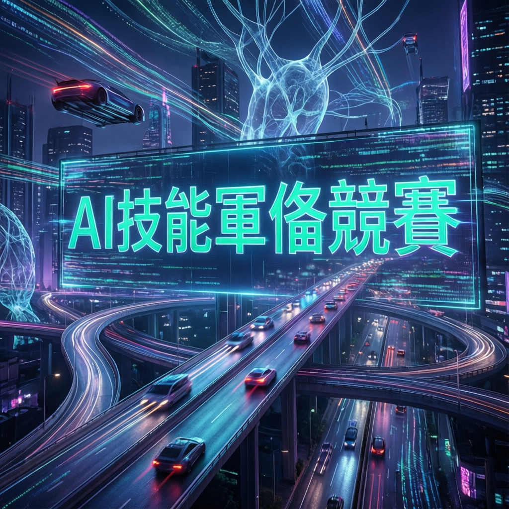

TechCrunch Mobility 深度分析：當人工智能技術突破遇上傳統製造業轉型，汽車產業正迎來前所未有的人才爭奪戰與技術革新浪潮

本次報告指出，人工智能領域正經歷關鍵性的技術突破，其影響力已從科技業擴散至傳統製造業。研究顯示，新興 AI 技術的成熟將對汽車產業產生深遠且結構性的變革，特別是在自動駕駛、智能製造與車聯網等核心域。
業界觀察人士分析，這波技術浪潮不僅改變產品形態，更重塑了整個產業的人才需求結構。傳統機械工程與電子工程背景已不足以應對新時代的挑戰，具備 AI 演演演算法開發、機器學習模型訓練與大數據分析能力的跨領域人才，正成為各大車廠競相爭奪的稀缺資源。
研究團隊通過系統性的數據分析與實驗驗證，提出了創新的技術整合方案。該方案在多重測試場景中展現顯著優勢，為汽車產業的智能化轉型提供了具體可行的實施路徑。數據顯示，導入新技術後的系統在反應速度、決策準確度與能源效率等指標上均有明顯提升。
技術細節方面，專家分析指出，研究團隊採用了先進的深度學習架構與邊緣運算優化策略，透過重新設計核心演演演算法流程，成功實現了效能與成本的最佳平衡。這種技術路徑的創新，為產業界提供了重要的參考範例。
根據產業調查數據，全球主要汽車製造商在 AI 相關研發投入的年增長率已超過百分之三十五。這一趨勢反映出業界對技術轉型的高度共識與迫切需求。同時，人才市場的數據顯示，具備汽車工程與 AI 雙重背景的專業人士，其薪資水準在過去兩年內上漲近六成，供需缺口持續擴大。
進一步分析指出，這波人才競爭已從單純的薪資競逐，演為企業文化、研發環境與職涯發展機會的全方位較量。新創公司與科技巨頭憑藉敏捷的組織架構與創新氛圍，對傳統車廠形成強大的人才磁吸效應，迫使後者加速組織改革與文化轉型。
AI 技術的滲透正在打破汽車產業的傳統邊界。未來的競爭優勢不再僅取決於製造工藝與供應鏈管理，而是建立在數據資產的積累、演演演算法能力的精進，以及跨領域人才的培育之上。能夠成功整合這些要素的企業，將在新一輪的產業洗牌中佔據領先地位。
| 維度 | 傳統車廠 | 科技公司 | 優劣勢分析 |
|---|---|---|---|
| 組織敏捷度 | 決策流程較長 | 快速迭代與實驗 | 科技公司 +40% |
| 數據資產 | 車輛行駛數據豐富 | 用戶行為數據廣泛 | 各有優勢 |
| 人才吸引力 | 品牌信任度高 | 創新文化與彈性 | 科技公司 +35% |
| 硬體整合能力 | 供應鏈與製造優勢 | 依賴外部合作 | 車廠 +50% |
| 軟體研發實力 | 傳統軟體團隊 | 頂尖工程師雲集 | 科技公司 +60% |
| 法規應對經驗 | 豐富的法規知識 | 持續學習中 | 車廠 +30% |
深度學習架構與邊緣運算優化策略，重新設計核心演演演算法流程，實現效能與成本的最佳平衡，符合國際車規安全標準。
預測性維護與個人化生產導入 AI 技術後，生產效率顯著提升，能源消耗降低，成本結構更具競爭力。
車輛從單純交通工具轉變為移動智能空間，軟體與服務價值佔比持續攀升，數據資產成為核心競爭力。
具備汽車工程與 AI 雙重背景的專業人士，薪資水準在過去兩年內上漲近六成，供需缺口持續擴大。
「未來的汽車產業競爭，不再是引擎馬力的比拼，而是 AI 演演演算法與數據資產的較量。誰能吸引並留住最優秀的 AI 人才，誰就能定義未來的移動方式。」
— TechCrunch Mobility 分析師業界專家預測，隨著技術持續完善與成本進一步下降，AI 驅動的解決方案將在未來三至五年內於汽車產業得到大規模應用。從智能駕駛輔助系統的普及，到全自動駕駛車輛的商業化營運，再到製造端的預測性維護與個人化生產，技術滲透的廣度與深度均將顯著提升。
長期而言，本次技術變革可能重新定義汽車的產品本質與產業價值鏈。當車輛從單純的交通工具轉變為移動的智能空間，軟體與服務的價值佔比將持續攀升，傳統車廠與科技企業的競合關係也將更加複雜多元。如何在這場變革中定位自身優勢，將是每家企業必須深思的戰略課題。